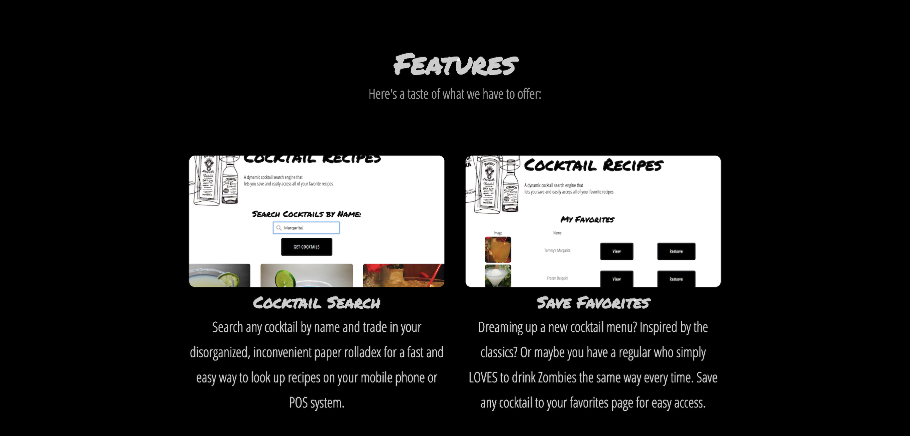
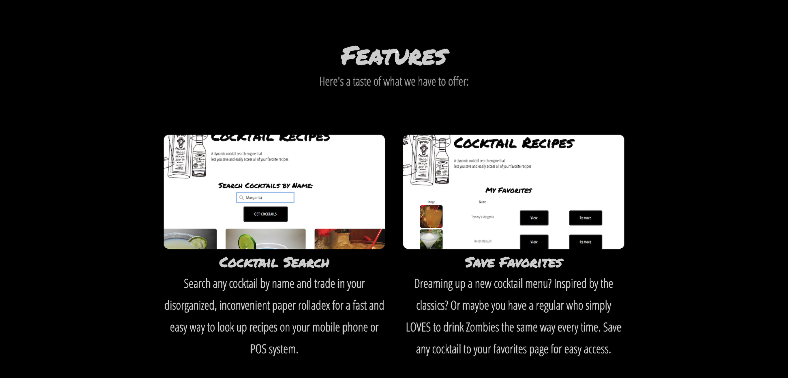

The Disruptive Artist
I grew up having to choose between my creative side and my analytical side. Feeling that one was deeply lacking without the other, I found myself ping-ponging between interests and desperately trying to balance a number of passions that seemed to have nothing in common with each other. Cut to 2004, when I discover the ultimate remedy to reconcile my affinity for art and design with my love of deep concentration, organization, and problem solving: Web Development.
Everything I’ve been inspired by since then has been some form of art translated into code, or some form of code translated to art. I find myself constantly mulling over the human and creative interaction with technology; even as our methods evolve in response to new, complex challenges, I’m always designing solutions for people first. Whether I'm creating a website layout or writing an API, I strive to keep that balance of creativity and organization in every line of code I write. A major part of that is imagining how my code will be perceived by everyone who comes in contact with it - the user, a developer who needs to quickly pick up a project where I left off, a manager, or even a young kid flipping through files trying to learn how it all comes together (the way I did).
My ideal team would consist of people who can understand and also think in these terms. Communication, patience, and respect are top priorities of mine and I believe they are the fundamentals of developing a successful project of any size.
Experience
InterRail
Consultant and Front-End Developer
2014 - Present
I’ve done ongoing consulting and front-end web development for InterRail LLC, a leading distributor of international rail tickets and passes. The company was the first to distribute rail tickets and passes online through their leading travel portals including RailPass.com, ItaliaRail.com, RailSaver.com, and InterRail.com. In 2014, InterRail placed #485 in Inc. Magazine’s list of Fastest Growing Private Companies in America.
EuroTrip
Front-End Developer and Social Media Manager
2013 - 2015
Oversaw content creation for online budget and student travel destination. Responsibilities included:
- Conceiving and researching new travel itineraries.
- Creating content and posts for social media outlets; managing posts in Hootsuite.
- Increasing brand engagement by growing number of followers.
- Responding to user questions and continuously updating UX/UI
Donna Franca Tours
Web Developer & Social Media Manager
January 2014 - November 2014
Led web and social media initiatives for the luxury Italian tour operator during engagement. Responsibilities included:
- Re-conceiving the brand’s website and digital experience.
- Producing new content and media assets in its Drupal CMS.
- Managing brand’s social media presence: Twitter, Facebook, Pinterest, and Google+
Portfolio
Spirit Guide: Cocktail Search Engine
 



Spirit Guide is a cocktail search engine that utilizes TheCocktailDB API.
Developed for cockatil bartenders to utilize during busy shifts; instead of flipping through a rolladex full of cocktails, quickly pull up Spirit Guide on your POS system to search and favorite any cocktail recipe.
EuroBus: Trip-Planner


EuroBus: Trip-planner is a trip-planning app for anyone traveling by bus in Europe. Since traveling by bus isn't typically as common as traveling by train or plane, it can seem confusing and chaotic at times.
It's an app that helps you keep track of which cities you plan to visit, the dates you plan to travel, and the bus company you've booked your ticket with. You can even add comments to your trip in case you need to remember to pack a snack because the bus doesn't make stops, or if the bus stop is located somewhere random and you need to give yourself very specific directions.
As an added bonus, the trip-planner also comes with a Travel Diary feature for recording your special travel memories. Bon Voyage!
MENEW


Menew is an app that keeps you up to date on menu changes from your favorite restaurants. Restaurants and bars can create an account to post their new items for patrons to see on the front page.
When is the spring cocktail menu launching? Follow on Menew. What are the Thanksgiving specials? Follow on Menew. Keep your loyal customers in the first-to-know!
Craving something specific? Use the search feature to search new menu items by name.
Skills & Proficiency
HTML5 - CSS
JavaScript
React - Redux - React Native
AJAX - JSON - jQuery
Git - GitHub
Node.js
Strengths
- ★ UX/UI Design
- ★ Server-side Programming
- ★ Mobile-first App Development
- ★ Problem Solving & Debugging
- ★ Source code organization
- ★ Teamwork & Communication
- ★ Bootstrapping
- ★ Entrepreneurial support
Interests
- ★ Coding
- ★ Learning new languages
- ★ Developing personal projects
- ★ Travel
- ★ Environmental community service
- ★ Tattooing
- ★ Bartending
- ★ Muay Thai
Languages
English
Spanish
French
Italian
Arabic